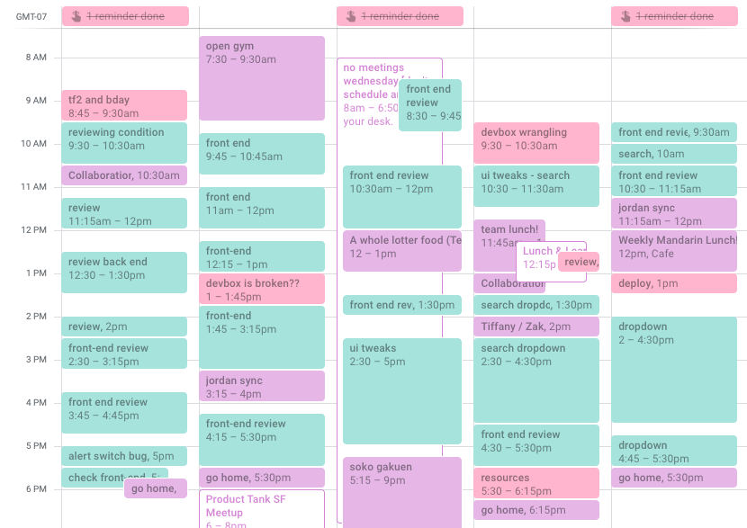

I’ve officially been a software engineer at Mixpanel for one year! For the full year, I’ve been tracking my progress via Github and thought I’d share my results since then.
Some background: I started programming in 2014 in my junior year at UC Berkeley. While I was at school, I took a couple of courses in theory (CS 61A, CS 61B, CS 160, and CS 169), and outside of class I taught myself basic web development and worked on side projects (largely on my own). As one does when they first start out, my method of programming was to hack things together via StackOverflow until it worked.
While at Mixpanel, I realized I wanted to work full time as a software engineer. In January 2018, I was the first to go through an official path to engineering, and in April 2018 I became a full fledged software engineer.
I had a lot to learn as an engineer for a company, and I still do. For one, the method I used for 4 years, hacking things together until they worked, doesn’t work for people who have worked on a relatively stable and mature codebase and know how to best write software for that codebase. I had to get rid of my JQuery habit, navigate the Panel Javascript framework for our new features, and learn how to write clean code that others would approve of.
To ensure I was on the right track, I wanted to track my progress, and I figured the most straightforward way to do so would be to record time spent and statistics from Github pull requests (PRs) of different projects.
After each PR was complete, I collected the following information in a Google Spreadsheet:
Afterwards, I synthesized the data by taking these values and aggregating them into data by period, which is categorized by my engineering level and the project working on at the time.
I calculated the time spent in hours by using Google Calendar and recording the time in which I started and stopped working on a certain PR. You can read more specifically on my method in my Productivity Analysis. I used a single calendar called “coding”, and each event title constituted a PR. I included the typing of code, research, and brainstorms with coworkers into the time spent calculation for each PR. I also have other calendars, such as my main calendar (scheduling events with other coworkers), and tasks (includes writing documentation, doing HR tasks, deploying code, code reviews, etc).
A typical week from March 2019.
Note that one data point that would have been useful to include is the difficulty of a task. I have not included them here in this calculation because that’s not something that we estimate on the task quantiatively before we begin (unlike some other companies do). Thus, there would be some bias if I were to include the actual difficulty afterwards, and there is also some subjectivity in determining this as well.
The following are the different periods of my engineering:
The dream for software engineers is to get a LGTM (“looks good to me”) on a significant PR and an approval to ship from a fellow colleague, or even better, a senior engineer. This single phrase shows that they approve of your process and code quality.
The following factors tracked contribute to this goal:
Other information that I’m interested to gather:
Below, I’ll go into more of the specifics of each bullet point I was interested that was contained in the methodology.
Here, I’m curious to see how long I spend in each type and whether or not the amount of time I’m spending on post-review is decreasing. If so, perhaps I’m improving! I’m also interested in whether the two have any correlation.
“Pre-review” is the period of time in which I spend on beginning research and coding before asking others to review, while “post-review” is that which I spend incorporating comments and feedback from others before shipping code to production. Deploy time is not added to the post-review unless I needed to revise something that came up during staging.
Sometimes pre-review time also includes time redoing a PR when a reviewer lets me know that I either created the wrong feature or to change the overall approach to account for an extra detail. In this way the wording of this section is a little misleading--my primary goal for this ratio is to determine how much time it takes to refactor or address the comments of others on coding style or existing behavior, and if I started on the wrong foot or did not include something, I don’t feel that’s completely accurate in that representation. However, I do admit that moving some PRs’ post-review time into the pre-review time fudges the numbers a bit, and thus I advise to take this section with a grain of salt.
In general, you’ll see that the hours spent during pre-review has gone down from its peak of 7.05 in Eng Path/KEEP to L2/AL of 3.9, as well as for post-review from its peak of 7.8 in Eng Path/KEEP to 1.45 in L2/AL. Average workdays during the pre-review has remained steady at around 2 days, while post-review has gone down from 2.91 in Eng Path/KEEP to 0.96 in L2/AL. In addition, if we compare Eng Path/KEEP to L1/KEEP and L1/D2 to L2/D2, we’ll see that average hours and workdays decreased considerably.
Is there a correlation between the hours of pre-review and post-review? Plotting all the data on a single graph, the coefficient of determination is 0.346, which suggests a positive moderate correlation between the two. Of course there are many outliers on this graph, as the majority of the data lies between 0-10 hours of pre-review and 0-5 hours of post-review. The dot highest on post-review was a PR from Eng Path/KEEP, while the one with the highest pre-review was from L1/KEEP.
These numbers represent the PR that obtained the most number of hours during pre-review and post-review for each section. Both pre-review and post-review are decreasing, albeit post-review decreasing a bit more unstably. However, if we compare Eng Path/KEEP to L1/KEEP and L1/D2 to L2/D2, max post-review hours have definitely decreased.
Here’s a graph of the ratio between pre-review and post-review for every PR deployed in sequential order. With the treadline, you’ll see that the pre-review ratio is increasing slightly. However, a lot more PRs in the “AL” section look like the ratio is lower than the D2 section. Looking within each section (KEEP, D2, AL), you can see that the lines are trending upwards.
In terms of the ratio between pre-review and post-review, on average you’ll see that the ratio is increasing in favor of larger pre-review (58.71% in Eng Path/KEEP to 87.2% in L2/D2). Currently that number is 75.6% in L2/AL. It’s also increasing within KEEP (Eng Path to L1) and D2 (L1 to L2).
These numbers represent the PR that obtained the highest pre-review and post-review percentage for each period. It looks like the post-review percentage is actually increasing. And again, post-review is decreasing within KEEP and D2.
In summary: I spent fewer hours and workdays on both pre-review and post-review on average per PR (except post-review workdays remained steady). There is a weak correlation between the two as well. In addition, while it seems that I’m spending more time on pre-review than post-review for each PR in general, it does seem like there are some PRs that are more tricky and have lead me to spend more time on post-review lately as the max post-review percentage is increasing. However, within projects I spend less time and have a decreasing pre-review to post-review ratio, which does suggest an improvement.
Here, I’m curious how long I’m spending per PR and in general, as well as whether they have any correlation.
I have decreased the amount of hours worked per PR on average from 14.84 in Eng Path/KEEP to 5.35 in L2/AL, and also decreased slightly the amount of workdays from 2.12 in Eng Path/KEEP to 1.81 workdays per PR on average.
In terms of the hours spent per day on PRs, I spent the most at L2/D2 of 5.08 hours per day, while L2/AL was 3.98 hours per day. I was working 50/50 during the Eng path, which explains why the number is low on average for Eng Path/SRFE (1.23). I must have pushed myself really hard during Eng Path/KEEP (and maybe neglected other duties) to achieve an average per day of 4.23 hours! Note that items such as meetings, lunch, and non-coding projects are included in an average day but not on the “hours spent” number. Vacations and offsites are removed from the “day” number. Overall the numbers have fluctuated and there’s not a clear pattern.
Here are two graphs comparing the total hours worked on a PR and the number of hours per day on a PR with the number of days spent on the PR respectively. For the first graph, the coefficient of determination is 0.806, which suggests that total hours on a PR is strongly linear correlated with workdays spent. Hours spent on a PR per day, on the other hand, is more all over the place with a coefficient of determination of 0.251.
So, what did I spend my time on? I did some extra calculations and found the following:
Thus, I went from spending on average 5.16 hours per day in L1/KEEP to 6.52 hours per day in L2/D2, so overall the time I’m spending is increasing, especially through code reviews, other projects, deployment, and soon as opslead.
In summary: the amount of time spent on PRs and per day has decreased over time, but the amount of time I’m spending on average on work activities is increasing. In addition, the total hours worked and the number of days spent per PR is strongly linearly correlated, which makes sense.
I think of number of comments being associated with feedback: the more comments, the more errors. Thus, if the number of comments decrease per PR, that could mean that I’m doing better.
It looks like both the average number of comments per PR and the most comments in a single PR is decreasing, from 22.09 in Eng Path/KEEP to 7.37 in L2/AL, and from a whopping 99 in Eng Path/KEEP to 36 in L2/AL. If we compare Eng Path/KEEP to L1/KEEP and L1/D2 to L2/D2, we’ll see that average comments are decreasing as well.
I also plot the number of hours worked per PR with the number of comments to see if there is a correlation between the two. The coefficient of determination is 0.598, which does suggest somewhat of a linear correlation between the two. Of course there are many outliers on this graph, as the majority of the data lies between 0-10 hours worked and 0-20 comments. The dot in the top right hand corner was a PR from Eng Path/KEEP. However, in general perhaps if I spend more time on a PR, the fewer comments I could get in general.
In summary: the number of comments is decreasing in general and within projects, which does suggest somewhat of an improvement. The amount of time and number of comments are somewhat linearly correlated as well.
We’ll take a look at PR cadence, PR code type, and the number of large PRs.
I define “large” PRs rather loosely: it must have more than 100 lines of code, but after that it’s a bit more subjective. For example, if I wrote a lot of test code to go with it, I don’t consider it a large PR. If for Javascript there’s a lot of comments or adding of a type.ts file for type checking purposes or much copy and pasting of code, I don’t consider it a large PR.
In this above graph, you’ll see that the number of these large PRs have decreased over time, from 18.18% in Eng Path/KEEP to 5.77% in L2/AL.
In addition, the cadence of PR has decreased from a PR every 4 days in Eng Path/SRFE to a PR every 1.35 days in L2/AL.PRs are being deployed quicker. Again, I did not receive deploy access until L1, and so that could also be the reason for longer PR times in L1. This time if we compare Eng Path/KEEP to L1/KEEP and L1/D2 to L2/D2, we’ll see that the cadence lengthens slightly within projects.
The type of PR could also have an influence as well. I first learned Panel, Mixpanel’s homegrown Javascript framework, in Eng Path/KEEP. Since then, I have many more PRs than during my Eng Path, much of which is written in Panel.
In summary: I have deployed more PRs per week and fewer large PRs over time and within projects I also coded more in Panel JS and less in Backbone.
And now for contribution to our code base: how much code am I adding? Generally speaking, more lines of code is more productivity. Again, this should have been lines of code modified (both added and removed) that purely added, since removed code is also considered productive (if not better than adding code).
I’m adding more code per day on average, from 15.79 in L1/KEEP to 38.26 in L2/AL. Again, during my Eng Path I worked 50/50, so this number shouldn’t be as high as the others.
This graph mimics the average lines of code per day graph very closely. It could be that the few larger PRs were outliers that influenced the number lines added on average as well. 785 lines in a single PR in L1/D1?? I remember that PR being stressful from wrangling multiple features, which is why it existed. The 556 lined PR in L2/AL wasn’t as bad since it was mostly test code and written in python, while the other max PRs represented here are all written in Javascript. Overall, the max lines of code are increasing. Again, if we compare Eng Path/KEEP to L1/KEEP and L1/D2 to L2/D2, the lines of code do decrease within projects for both graphs.
Again, this graph is pretty similar to the above two, most likely as a result from the larger PRs that bumped up the amount of code.
The coefficient of determination here is 0.555, which suggests that the total hours worked and the amount of lines of code added is leaning towards strongly linearly correlated. Again there are more outliers, such as the 785 lined PR that took 53.5 hours to complete from L1/D2, and the 556 lined PR took 17.25 hours to complete from L2/AL.
Out of curiosity, I also plotted the lines of code with the comments per PR. The coefficient of determination is 0.211, which suggests a moderate linear correlation. If we remove the obvious outlier of 99 comments from Eng Path/KEEP, it decreases to 0.21.
In summary: the lines of code added are also increasing in general and in projects. There is also a stronger linear correlation between the number of hours worked and the lines of code added, and a weaker correlation between amount of comments and lines of code added.
Smaller PRs equal higher productivity. I shifted from containing all code into a single PR for a feature to breaking up a single feature into smaller iterative PRs. This single shift was largely responsible for a decrease in time spent per PR (pre-review, post-review, average working time), decrease in comments per PR, and increase in number of PRs deployed. Breaking PRs up into smaller chunks allows reviewers to understand a larger whole piece by piece and catch things that might have otherwise be missed on a larger PR. This is a common practice at Mixpanel and something that we encourage all of our engineers to do.
I improved, probably. Comparing Eng Path data to now, it’s clear that there are fewer comments, more PRs deployed, and a higher ratio of pre-review to post-review, which does appear to be closer to the “LGTM” state and progress. Even though L2/AL appears to show the opposite of improvement (more comments than L2/D2, lower pre-review ratio, and higher max post-review percentage), that doesn’t necessarily mean that I’ve taken a step back. For example, this is a completely new project with its different set of challenges more fitting of my level than of previous projects as on the eng path or L1. We can see that within KEEP and D2, L1/KEEP and L2/D2 are both lower in comments and post-review percentages than its Eng Path/KEEP and L1/D2 counterparts. However, tying in a difficulty component to each project would confirm this.
I spent less time fixing my devbox than I thought. When something breaks in my devbox, it feels almost like the end of the world sometimes and that it’s such a time sink. However, it looks like right now I only spend about 14 minutes per day fixing issues or improving my environment, which is about an hour per week. This is less than my predicted 2 hours per week.
I spend more time deploying code than I thought. Deployment at Mixpanel involves pushing changes to staging (which can take time waiting in line to get the staging locks as well as running all necessary successful deployment pieces for staging), to testing the change on staging, to actually deploying code (which can take more time for the whole cron to complete). And with the increase in the number of PRs deployed, so does the amount of time it takes to go through with the deployment process. I spend 26 minutes per day (2 hours per week), which is even more than fixing my devbox!
I spend on average 5.68 hours per day productively, 4.50 on PRs. The PR number has decreased lately, while the productive number has increased over time. That means in a typical 8 hour day, 73.3% is spent productively, which...isn’t totally a bad number?
There’s a positive moderate linear correlation between the hours spent on pre-review and on post-review. Just because I spend a lot of time on the pre-review doesn’t necessarily mean I’ll spend less time on the post-review, but it does help to spend more time on it.
There’s a positive moderate linear correlation between the hours worked on a PR and the number of comments, and a higher linear positive correlation between hours and amount of code added. The larger the PR, the more comments and the more time it takes to create it.
I’ve learned a lot about software engineering over the past year, and there’s a lot more that I have to learn. I definitely have a long way to go before I can create a significant PR with LGTM, but for now I’m happy that I no longer have to see 99 comments on a single PR: fingers crossed.
I plan to continue breaking up larger features into smaller PRs and spending more time on the pre-review stage (ensuring the methodology is correct and doing research). In addition, I should find some way to decrease the deployment time and increase the amount of productive and coding time.
What do you think about this data and the conclusions I’ve presented here? I encourage all comments and look forward to an open discussion. I welcome anyone who'd like to discuss further about my results to comment and read about more feelings here.
Thank you to my team: Jordan, Josh, and Jing, for putting up with my code and questions on a daily basis.
Thank you to Bernie, Robert, and Zak for believing in me and giving me the flexibility to pursue my own path.
Thank you to James for your inspiring words on logging time in calendars and productivity, which I use religiously to this day.
Thank you to Aria for planting the idea of programming in my head.
Thank you to Max, who started my first side project and taught me all about Django and Javascript web development.
Thank you to Andrew for encouraging me to continue to code and to never give up.
Thank you to everyone who read and shared “A college student’s individual analysis of productivity of four years” I wrote in 2016, which gave me the confidence to continue to create ridiculous projects like this.
Thank you to my parents for putting up with me and supporting my switch to software engineering even though it has nothing to do with my major. You are the best.